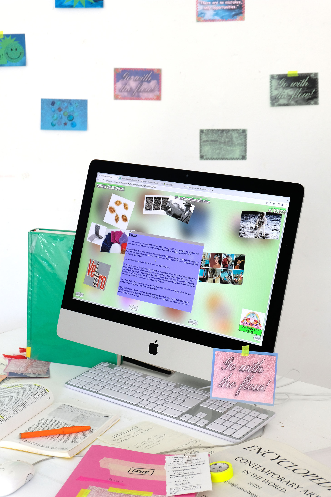
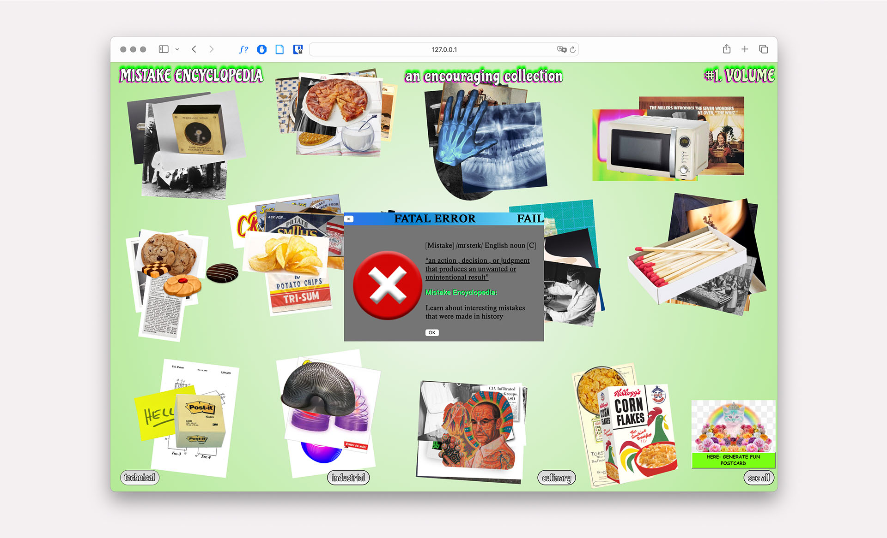
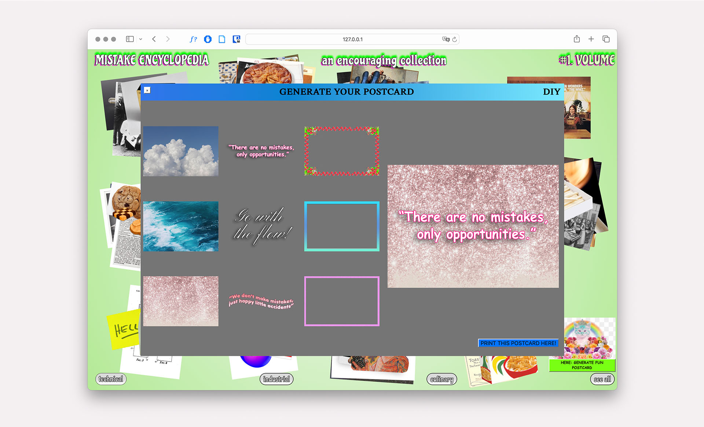
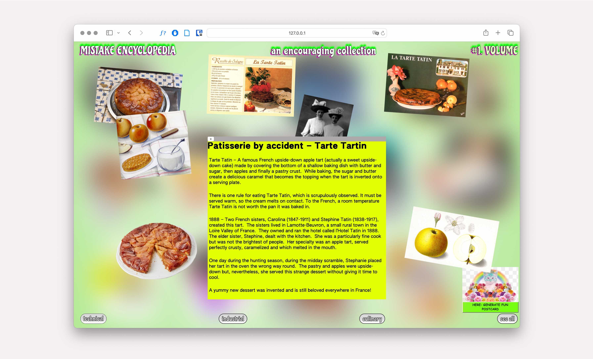
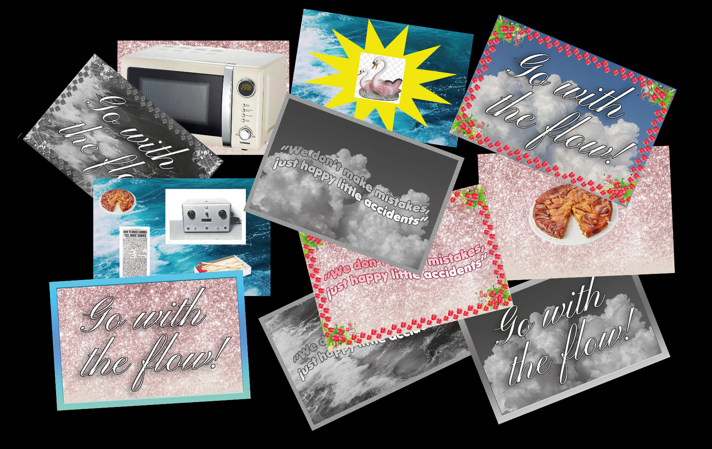

The webzine “Mistake Encyclopedia” explores the phenomenon of mistakes, emphasizing their role as drivers of groundbreaking discoveries. By presenting historical examples of errors that led to significant innovations, the project critiques the emphasis on perfection in a performance-driven society.
The website includes a web-to-print tool that enables users to design and print motivational postcards, celebrating failure as a source of creativity and progress.




